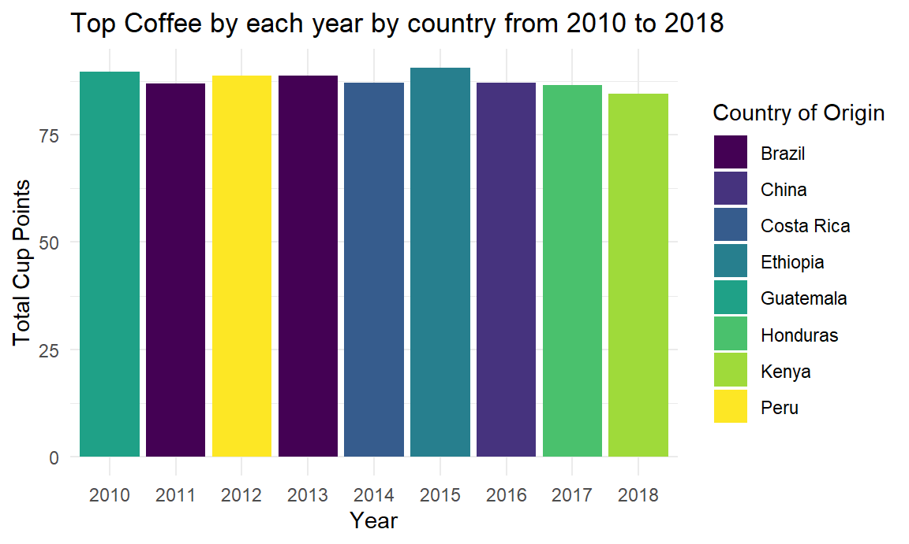

ratings_df = read_csv("data/coffee_ratings.csv") %>%
janitor::clean_names() %>%
select(total_cup_points, species, country_of_origin,
region, number_of_bags, bag_weight, grading_date, variety,
processing_method, aroma, flavor, aftertaste, acidity, body, balance,
uniformity, clean_cup, sweetness, cupper_points, moisture, color,
altitude_low_meters, altitude_high_meters, altitude_mean_meters) %>%
mutate(grading_year = str_extract(grading_date, "\\d{4}"),
species = as.factor(species),
variety = as.factor(variety),
processing_method = as.factor(processing_method),
moisture = as.factor(moisture),
color = as.factor(color))points_dis = ggplot(ratings_df, aes(x = total_cup_points)) +
geom_histogram(binwidth = 1, fill = "skyblue", color = "black") +
coord_cartesian(xlim = c(60, NA)) +
theme_minimal() +
labs(title = "Total Cup Points Distribution", x = "Total Cup Points", y = "Frequency")
ggplotly(points_dis)variety_dis = ratings_df %>%
filter(!is.na(variety)) %>%
ggplot(aes(x = fct_rev(fct_infreq(variety)))) +
geom_bar(fill = "skyblue") +
facet_grid(~ species, scales = "free_x") +
theme_minimal() +
theme(
axis.text.x = element_text(angle = 45, hjust = 1, vjust = 0.5, size = 8),
strip.text = element_text(size = 10)
) +
labs(
title = "Frequency of Varieties by Species",
x = "Variety",
y = "Count"
)
ggplotly(variety_dis)ratings_df |>
mutate(variety = fct_reorder(variety, total_cup_points)) |>
plot_ly(
y = ~total_cup_points,
color = ~variety,
type = "box",
colors = "viridis"
) %>%
layout(
yaxis = list(
title = "Total Cup Points",
range = c(60, NA)
),
xaxis = list(
title = "Variety"
))ratings_filtered <- ratings_df %>%
filter(!is.na(total_cup_points) & !is.na(altitude_mean_meters))
top_n_varieties = 8
top_varieties <- ratings_filtered %>%
count(variety, sort = TRUE) %>%
top_n(top_n_varieties, n) %>%
pull(variety)
ratings_filtered <- ratings_filtered %>%
mutate(
variety = ifelse(variety %in% top_varieties, as.character(variety), "Other"),
variety = as.factor(variety),
text_label = str_c("Total Cup Points: ", total_cup_points,
"\nMean Altitude(meters): ", altitude_mean_meters,
"\nVariety: ", variety)
)plot_ly(
data = ratings_filtered,
x = ~total_cup_points,
y = ~altitude_mean_meters,
type = "scatter",
mode = "markers",
color = ~variety,
text = ~text_label,
alpha = 0.5
) %>%
layout(
title = "Total Cup Points vs. Mean Altitude (meters)",
xaxis = list(title = "Total Cup Points",
range = c(60, max(ratings_filtered$total_cup_points, na.rm = TRUE))),
yaxis = list(title = "Altitude Mean Meters")
)top_origins =
ratings_df |>
group_by(grading_year) |>
arrange(grading_year, desc(total_cup_points)) |>
slice(1)
top_origins |>
arrange(grading_year) |>
select(grading_year, country_of_origin, total_cup_points) |>
knitr::kable(
col.names = c("Year", "Country of Origin", "Total Cup Points"),
caption = "Top Coffee by Country from 2010 to 2018",
)| Year | Country of Origin | Total Cup Points |
|---|---|---|
| 2010 | Guatemala | 89.75 |
| 2011 | Brazil | 86.92 |
| 2012 | Peru | 88.75 |
| 2013 | Brazil | 88.83 |
| 2014 | Costa Rica | 87.17 |
| 2015 | Ethiopia | 90.58 |
| 2016 | China | 87.25 |
| 2017 | Honduras | 86.67 |
| 2018 | Kenya | 84.58 |
top_origins |>
ggplot(aes(x = grading_year, y = total_cup_points, fill = country_of_origin)) +
geom_col() +
labs(
title = "Top Coffee by each year by country from 2010 to 2018",
x = "Year",
y = "Total Cup Points",
fill = "Country of Origin"
) +
theme_minimal()